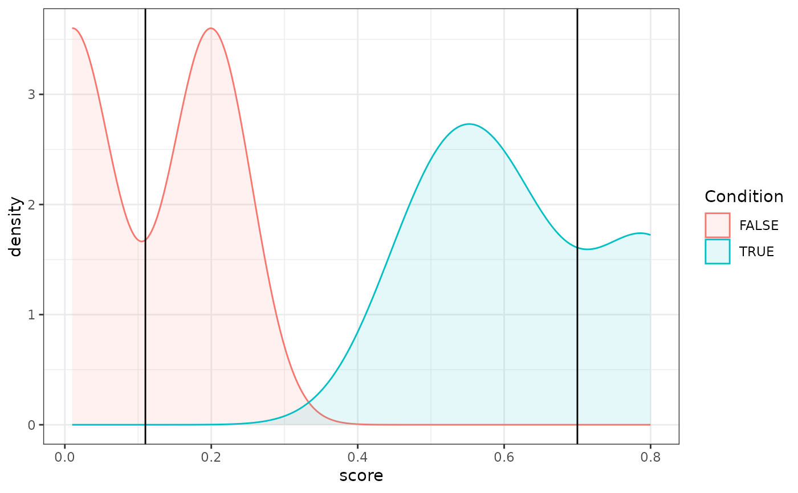

Plot density of TRUE/FALSE distributions
Arguments
- dataset
A data frame containing the calibration dataset, typically the output of an authorship analysis function like
impostors().- q
This optional argument should be one value or a vector of values that contain the score of the disputed text(s). These are then plotted as lines crossing the density distributions.
Value
A ggplot2 plot with the density distributions for the scores for TRUE (typically, 'same-author') vs. FALSE (typically, 'different-author').
Examples
res <- data.frame(score = c(0.5, 0.2, 0.8, 0.01, 0.6), target = c(TRUE, FALSE, TRUE, FALSE, TRUE))
q <- c(0.11, 0.7)
density_plot(res, q)
